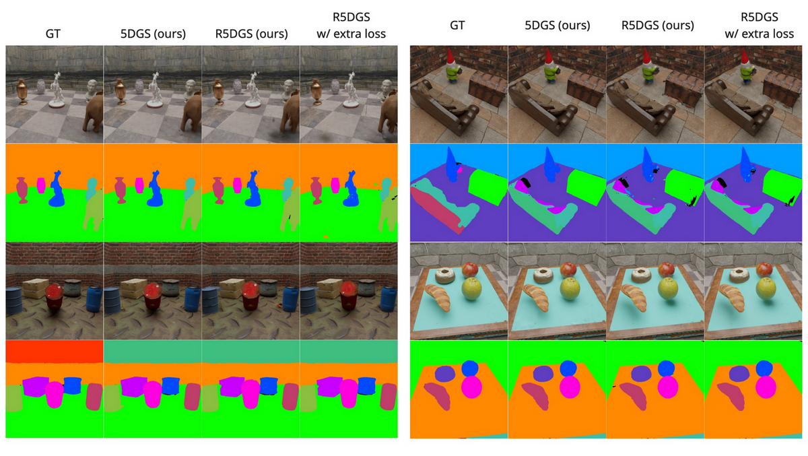
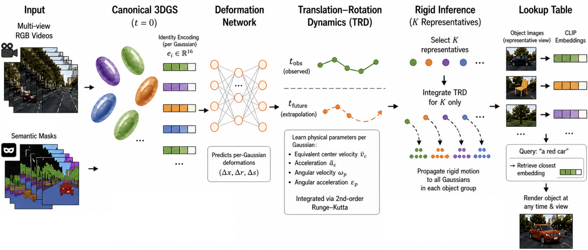
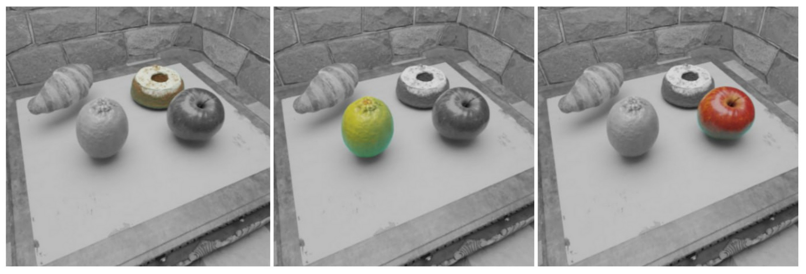

We present R5DGS, a framework that extends physics-informed 4D Gaussian Splatting with instance-level semantics and rigid-body constrained extrapolation for efficient dynamic scene reconstruction. Our method augments each Gaussian with a compact learnable identity vector, enabling discrete object grouping without 3D annotations.
By restricting dynamics prediction to representative Gaussians per object (typically 9-12) rather than the full set (~40,000), we achieve a consistent ~11 FPS speedup during extrapolation on NVIDIA RTX 4090 while preserving physically plausible motion trajectories.
Additionally, we construct an offline CLIP-based lookup table that enables open-vocabulary object retrieval from natural language prompts, supporting selective rendering and scene editing without retraining.
R5DGS builds on TRACE with identity-augmented Gaussians, rigid-body constrained extrapolation, and a CLIP-based open-vocabulary retrieval pipeline.

Each 3D Gaussian is augmented with a learnable 16-dimensional identity vector that is alpha-blended during rendering. A lightweight classifier supervised by SAM2+DEVA masks enables discrete object grouping without any 3D annotations.
semantic groupingAt inference, dynamics are computed only for representative Gaussians at each object's geometric centroid. Motion is rigidly propagated to all other Gaussians via translation and rotation of precomputed canonical offsets, preserving inter-point distances.
~11 FPS speedupAn offline CLIP-based lookup table stores text-aligned embeddings for each object group. Natural language prompts retrieve Gaussian subsets via cosine similarity, enabling selective rendering and scene editing without retraining.
zero-shot retrievalQuantitative and qualitative evaluation on the Dynamic Indoor Scene dataset.

| Method | Dining Table | Chessboard | Darkroom | Factory | ||||||||
|---|---|---|---|---|---|---|---|---|---|---|---|---|
| PSNR↑ | SSIM↑ | LPIPS↓ | PSNR↑ | SSIM↑ | LPIPS↓ | PSNR↑ | SSIM↑ | LPIPS↓ | PSNR↑ | SSIM↑ | LPIPS↓ | |
| TRACE | 35.580 | 0.962 | 0.050 | 34.630 | 0.963 | 0.055 | 37.774 | 0.961 | 0.067 | 36.488 | 0.965 | 0.049 |
| 5DGS (Ours) | 35.428 | 0.956 | 0.055 | 33.991 | 0.956 | 0.063 | 36.600 | 0.955 | 0.074 | 35.926 | 0.958 | 0.055 |
| R5DGS (Ours) | 28.844 | 0.942 | 0.066 | 28.805 | 0.932 | 0.086 | 31.181 | 0.939 | 0.091 | 29.798 | 0.924 | 0.075 |
| R5DGS w/ extra loss (Ours) | 28.688 | 0.939 | 0.067 | 29.153 | 0.929 | 0.089 | 31.537 | 0.943 | 0.087 | 30.749 | 0.928 | 0.073 |
| Method | Dining Table | Chessboard | Darkroom | Factory | Overall | |||||
|---|---|---|---|---|---|---|---|---|---|---|
| FPS↑ | mIoU↑ | FPS↑ | mIoU↑ | FPS↑ | mIoU↑ | FPS↑ | mIoU↑ | FPS↑ | mIoU↑ | |
| 5DGS | 66.9 | 0.78 | 67.3 | 0.75 | 49.4 | 0.37 | 64.9 | 0.47 | 62.1 | 0.59 |
| R5DGS | 76.3 | 0.77 | 76.9 | 0.73 | 66.2 | 0.38 | 75.0 | 0.46 | 73.6 | 0.59 |
Metrics per scene on the Dynamic Indoor Scene dataset. FPS measured on NVIDIA RTX 4090. R5DGS achieves a consistent ~11 FPS speedup over 5DGS across all scenes while maintaining mIoU.
@misc{gridusov2025r5dgs,
title={R5DGS: Semantic-Aware 4D Gaussian Splatting with Rigid Body Constraints for Efficient Dynamic Scene Reconstruction},
author={Denis Gridusov and Maxim Popov and Sergey Kolyubin},
year={2025},
eprint={2605.25909},
archivePrefix={arXiv},
primaryClass={cs.CV}
}